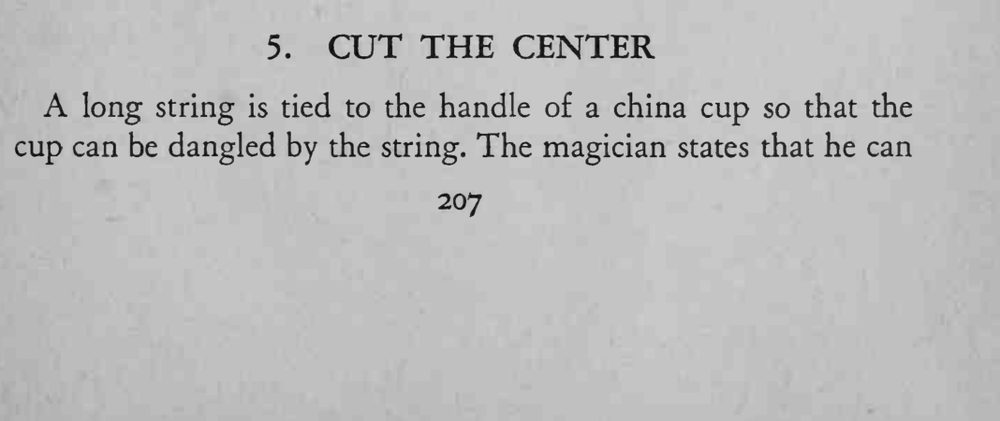
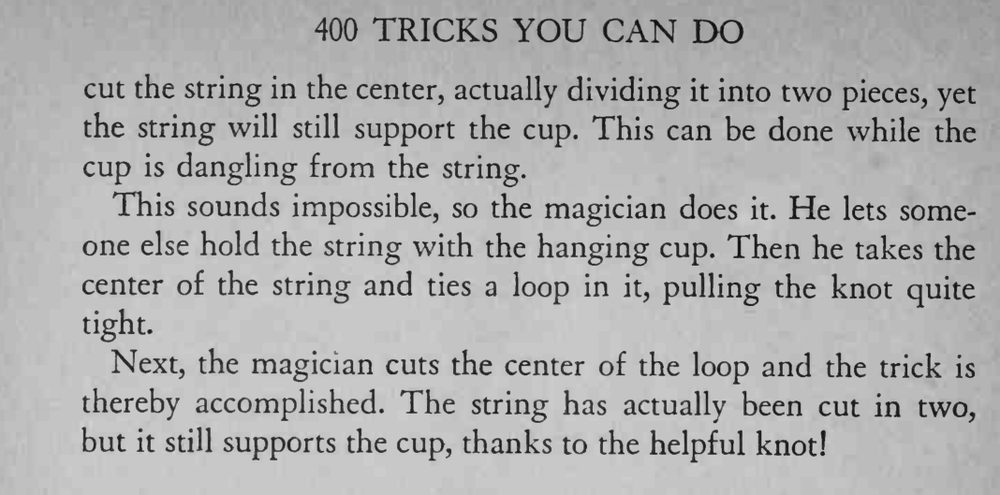

绳子系在瓷杯把手上悬着杯子，魔术师把绳子从中段剪成两截，杯子却仍然吊在绳子上。
结要拉紧成环，剪的正是环心，两段绳才断而不断。


long string is tied to the handle of a china cup so that the cup can be dangled by the string. The magician states that he can cut the string in the center, actually dividing it into two pieces, yet the string will still support the cup. This can be done while the cup is dangling from the string. This sounds impossible, so the magician does it. He lets someone else hold the string with the hanging cup. Then he takes the center of the string and ties a loop in it, pulling the knot quite tight. Next, the magician cuts the center of the loop and the trick is thereby accomplished. The string has actually been cut in two, but it still supports the cup, thanks to the helpful knot!